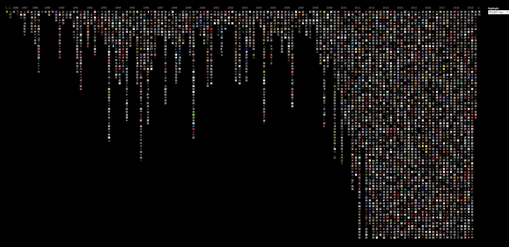
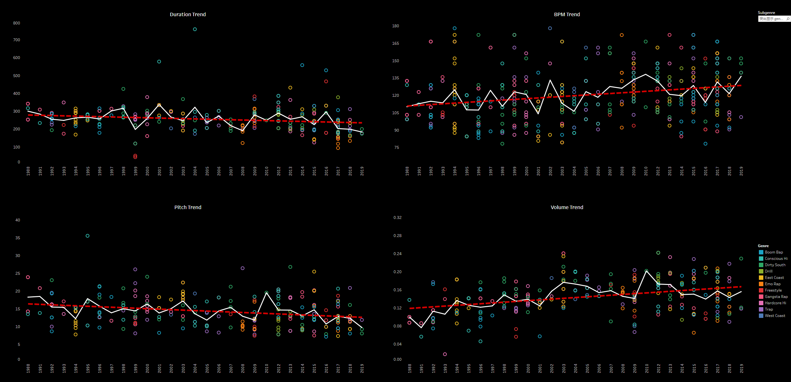
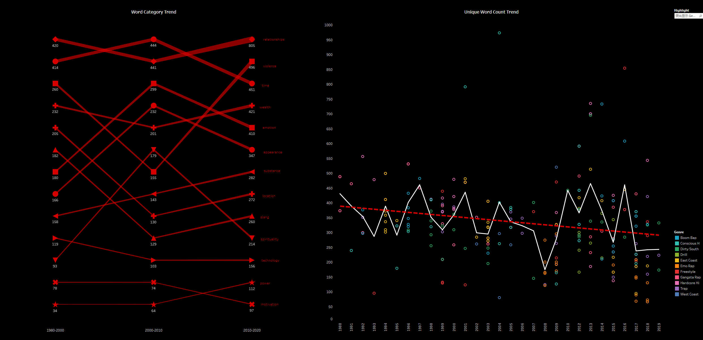
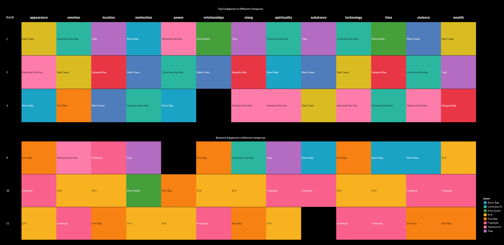
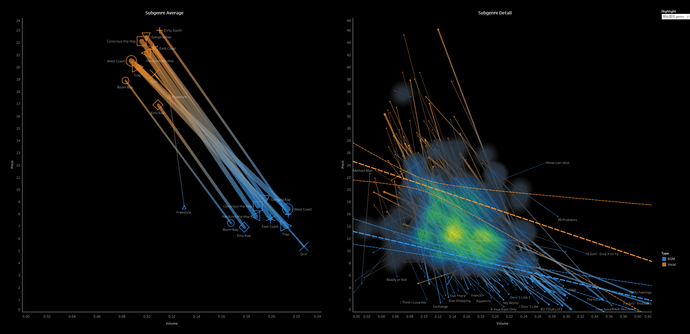
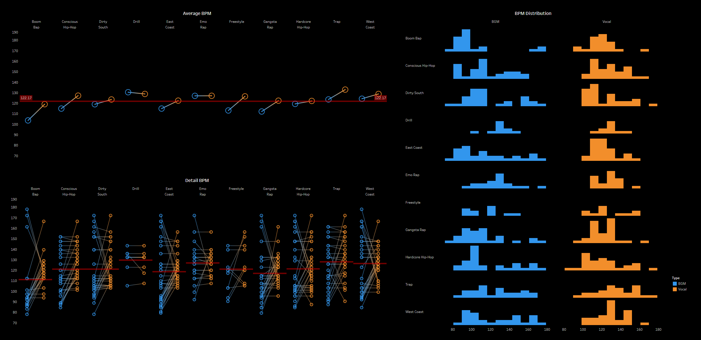
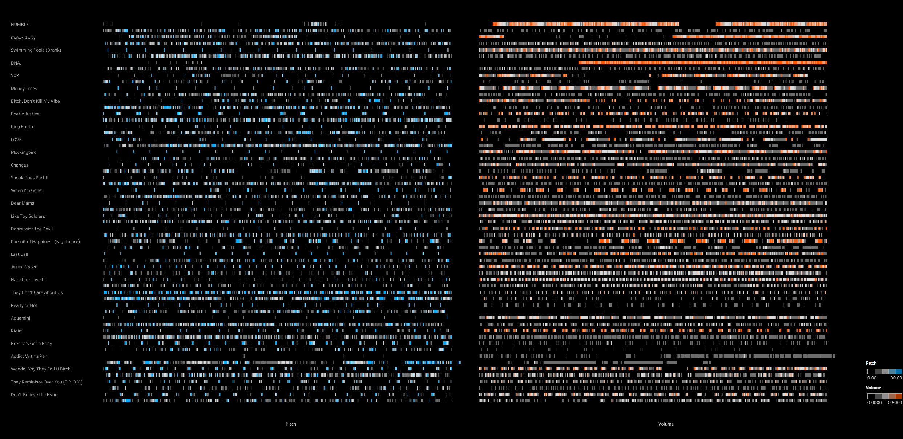

Hip Hop Subgenre Data Visualization
-
The project originates from the final assignment of the CS-6730-A Data Visualization Principles course at Georgia Tech. The aim of the project is to analyze the melodic and lyrical characteristics of 10 subgenres of hip-hop music, helping users better and more quickly understand the differences and connections between these subgenres, thereby deepening their understanding of hip-hop culture. Based on this, we designed a flexible data exploration experience for users, allowing them to start from different songs or subgenres based on their preferences and obtain various types of information.
1. Data Retrieving
We obtained a dataset of hip-hop music entries from 1970 to 2020 via the Genius API, which includes metadata such as release date, artist, subgenre type, and more. This dataset is frequently cited in related research. We filtered the dataset by subgenre, selecting 11 subgenres for analysis. Then, we selected the top 10 songs from each decade based on popularity.
Using the Spotify API, we downloaded previews of these songs and processed them with a voice-background separation model. After separating the vocals from the background music, we analyzed the volume and pitch of the audio frame by frame. This allowed us to generate the raw data for visualizing the melody.
For the lyrics, we used a simple AI sentiment analysis model to assess the emotional tone of each line of the lyrics. This allowed us to perform a sentiment polarity analysis, generating raw data for visualizing the emotional trends within the lyrics.
2. Data Visualization
We imported the processed raw data into Tableau for visualization and created a series of charts ranging from macro to micro perspectives.
In Chapter 1, we focused on comparing the yearly trends of hip-hop music, providing users with a general understanding of its overall development over time.
In Chapter 2, using trap (a subgenre of hip-hop) as an example, we compared the differences in melody and lyrical composition between different subgenres.
In Chapter 3, we delved into the song level, showcasing the analysis of vocals and background sound from song previews. This allowed users to explore the music in greater detail.
3. Data Insights
Given that our data is quite specialized, it might be difficult for casual music enthusiasts to fully understand it. Therefore, we took screenshots of certain data points and added annotations to make it easier for users to comprehend the meaning and implications behind the data. This approach helps users more easily grasp the insights and context represented by the data.
4. Website Development
We compiled the above data visualizations and their meanings into an interactive website using HTML. This allows users to engage with the data more dynamically and explore the various visualizations and insights in a user-friendly manner. The website provides an intuitive platform for users to interact with and better understand the data.
-
Design Type: Data Visualization
Project Type: Final Project of CS-6730-A, Georgia Institute of Technology
Time: 2024.8-2024.12
Instructor: Dr.John Stasko
Collaborator: Hanna Fu、Wanting Mao、Yuxin Lin
Main Contributions:
1. Obtained the 1970-2020 hip-hop dataset from the Genius API;
2. Performed data cleaning on the obtained dataset, including filtering by subgenre and popularity, as well as re-inputting invalid values;
3. Downloaded song previews using the Spotify API, separated vocals and background music using a model, and used Python to analyze the audio frame by frame to extract metadata for visualization;
4. Designed 9 data visualization charts using Tableau;
5. Built the website using HTML, CSS, and JavaScript.
Skill: Python、Tableau、HTML、CSS、JavaScript






